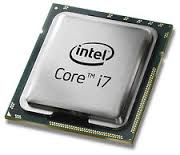
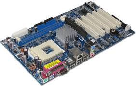

Those parts which are found inside a computer CPU are called the hardwares of a computer.
CPU is the central processing unit so it will definately contain many parts like Motherboard , RAM, Cooling fan, Power supply (SMPS), Processor etc.
Some of them are described below
ProcessorIt is a Chip which is fitted on the motherboard of a CPU and does all the processes as its name says.
When we open any software or any programe then the process which takes place is processing and all the processing is done by processor
It is a green plate where all the connections of a computer system CPU take place.
Processor, RAM, Cooling fan, USB hub connector etc all cables are connected here so if it will not work then nothing is possible.
It is a green plate which is small in size it also like processor as it affects the speed but the function is quite different.
When we install a software then it gets install in drive but it occupies the cache and running memory in RAM. So we can say that processor and RAM both affects the speed of system.